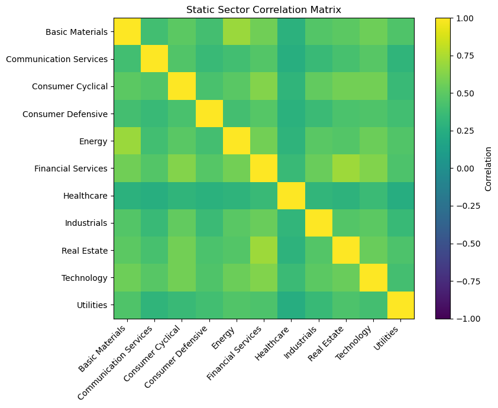
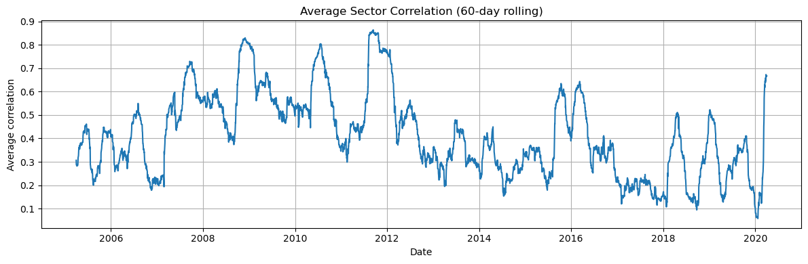

Sector Investing, Made Practical
Stop guessing. Discover which market features truly drive returns and risk.
We turn raw market behavior into a decision toolkit: diversification of sectors → influence of regimes → representative stocks → ETF vs DIY → a final strategy picker.
Live Preview
Quick hooks: co-movement + how it changes through time.
Motivation
Investors often diversify across sectors without knowing when this diversification truly works. During market stress, correlations and volatility shift, and sectors that usually behave differently can suddenly move together. Our goal is to turn complex market behavior into clear, data-driven insights. By studying sector correlations, clustering, regime dependence (bull, bear, neutral), and intra-sector structure, we build a practical guide that helps investors understand risk, avoid false diversification, and adapt their strategy to changing market conditions.
The investor problem
Portfolios often look diversified on paper — until stress hits. Correlations spike, “different sectors” move together, and you discover you were holding one big bet.
Our promise
We move in a clean sequence: first structure (correlation + clusters), then implementation (one stock? basket? ETF?), then context (bull/bear regimes), then final guidance (an investor-ready strategy picker).
Roadmap: 5 chapters
Same fintech layout, but now the story is cleaner: five big chapters, each with subparts. You can read it top-to-bottom like a product guide.
Chapters
Each chapter has subparts: (1) what we show, (2) why it matters, and (3) chart placeholders you’ll fill from script.js.
Chapter 1) Sector Diversification (Correlation + Structure)
Start with the foundation: which sectors truly diversify each other — and when that breaks.
Subparts
- 1.1 Correlation heatmaps — full sample vs last 20y vs last 5y
- 1.2 Rolling correlations — 60d vs 120d, so “diversification failure” is visible
- 1.3 Sector map (UMAP) — sectors close together behave similarly (often redundant)
Why it matters
- Stops “fake diversification” early
- Shows regime dependence (correlations often rise in stress)
- Gives a clean structure you build on later
Chapter 2) Influence Of The Regimes On the Sectors' Returns And Volatilities
Question: do sectors behave the same way in bull, neutral, and bear markets — or does the regime reshape everything?
Introduction
In this chapter, we study how market regimes influence sector behaviour. Instead of assuming sectors have “stable” risk and return patterns, we condition everything on the regime (Static / Bear / Neutral / Bull) and compare what changes.
What we plot
- Correlation structure — how sectors co-move inside each regime
- Average correlation — a compact summary of systemic risk / diversification
- (Later) returns and volatilities per sector, per regime
Why these plots
- To show that diversification is regime-dependent
- To highlight that “safe” sectors can still become risky in stress regimes
- To motivate regime-aware allocation and risk control later in the project
Mini conclusion
The same sector map can look very different depending on the regime. This is why static assumptions can break when the market environment changes.
Explore by regime


Interpretation (placeholder):
In the static view, we get a “global” picture of sector co-movement. This is useful as a baseline, but it can hide big differences that appear once we condition on regimes.
Chapter 3) ETF vs DIY Basket
The practical question: should you buy the sector ETF, or recreate exposure yourself?
Intro
This section compares a sector ETF (e.g., XLK) with a DIY sector proxy (“basket”) built from the sector’s underlying stocks using a volume-weighted construction. The goal is to check whether the ETF delivers exposure that is similar to what you would get from a transparent, rules-based basket—and to see how their risk evolves through time.
Plot 1 — Performance (Index = 100)
What the plot shows
Both series are rebased to 100 on the same start date, so the chart is comparing growth paths, not absolute prices.
- ETF: the sector ETF.
- Basket: a DIY proxy built from the sector’s stocks using volume-weighted weights.
How to interpret it
- If the two lines track closely, the ETF and the basket provide similar exposure (at least in aggregate).
-
If the lines drift apart, the ETF and the basket are capturing different exposure,
typically due to:
- differences in constituents (inclusions/exclusions),
- differences in weighting rules (cap-weighted vs your volume-weighted method),
- caps/constraints that change concentration.
Plot 2 — Volatility (Rolling, Annualized)
What the plot shows
Rolling annualized volatility summarizes “how wild the ride is” (risk) and how that risk changes over time.
It answers:
- When was the sector risky?
- Did ETF and basket risk spike at the same times?
- Is one consistently smoother or more explosive during stress?
How to interpret it
-
Volatility and performance are related but not the same:
- Similar performance, different volatility: one path is smoother, the other bumpier.
- Similar volatility, different performance: they take different bets and drift apart.
- Different regimes: one may react more strongly in crises even if long-run growth is similar.
Method note
- We compute daily log returns.
- ETF and basket are aligned on identical trading dates.
Small conclusion
Overall, the DIY stock basket tends to outperform the sector ETF in this demo. The main exception is the housing market, where the ETF performs better than the basket. In terms of risk, the ETFs are generally less volatile than the stock baskets, meaning the ETF path is typically smoother even when long-run performance is similar or lower. This points to a trade-off: the basket often delivers higher returns, but the ETF usually provides a less bumpy ride.
Choose a sector


Interpretation (placeholder):
Interpretation not ready for sector basic_materials.


Chapter 4) Regime Analysis (Bull / Bear / Neutral)
Markets change. We label regimes and recompute sector behavior inside each one.
Subparts
- 4.1 Market index with regime shading — when bull/bear happens
- 4.2 Winners/losers by regime — which sectors hold up in bear markets
Why it matters
- Explains why diversification fails when it matters most
- Identifies defensive sectors empirically
- Feeds directly into the strategy picker
Chapter 5) Investor Profile Mapping (Final Synthesis)
Convert everything into a simple framework: what to buy depends on your risk tolerance and the current regime.
Subparts
- 5.1 Profiles — conservative / balanced / aggressive
- 5.2 Regime-aware choices — bull vs bear changes what “sensible” means
- 5.3 Final output — strategy picker chooses between ETF vs basket vs category
Why it matters
- Turns analysis into a product
- Gives a clear decision rule, not a long report
- Lets you tailor recommendations to the user
Interactive Strategy Picker
Choose your profile, regime assumption, and preferred instrument: ETFs vs sector baskets vs market category. Instantly see expected returns and volatility.
Controls
This is the “product” moment: the site becomes a decision tool.